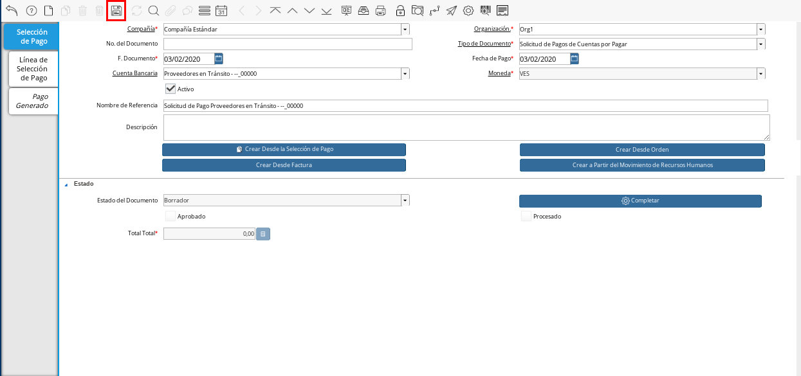

Anticipo a Proveedores en Tránsito¶
Un anticipo a proveedor es el pago de una parte o un porcentaje del monto total de una compra o venta, realizado por adelantado. El mismo tiene la finalidad de asegurar los productos o servicios que el comprador requiere y por los cuales el vendedor amerita un anticipo para cubrir diferentes gastos.
En ADempiere es posible reflejar los anticipos realizados a proveedores en tránsito, permitiendo por medio de este, el control de los saldos abiertos que tienen los proveedores.
Transferencia Bancaria¶
Ubique y seleccione en el menú de ADempiere, la carpeta “Gestión de Saldos Pendientes”, luego seleccione el proceso “Transferencia Bancaria”.
Imagen 1. Menú de ADempiere

Realice el procedimiento regular de transferencia bancaria explicado en la Carga de Anticipo del documento “Liquidación Anticipo Intermediario”, para transferir desde un banco determinado de la empresa a la caja del proveedor en tránsito al cual se le aplicará el anticipo.
Para realizar el procedimiento se debe tomar en cuenta lo siguiente:
Cuenta Bancaria Desde: 0105-0000000000000000
Cuenta Bancaria a Transferir: Proveedores en Tránsito - –_00000
Socio del Negocio: Proveedor Estándar
Moneda: VES
Cargo: Anticipo Tercero
No. del Documento: 0111245859
Documento Destino: 0111245859
Monto: 200.001.332,00
Descripción: Transferencia de Anticipo a Proveedor en Tránsito
Fecha de Estado de Cuenta: 03/01/2020
Fecha Contable: 03/01/2020
Quedando la ventana del proceso “Transferencia Bancaria”, de la siguiente manera:
Imagen 2. Transferencia Bancaria
Al seleccionar la opción “OK, ADempiere realiza la transferencia en base a los datos ingresados en los campos de la ventana, generando un documento en “Pago/Cobro” que representa el egreso en el banco seleccionado y un documento en “Caja” que representa el ingreso en la caja seleccionada.
Egreso:
Resultado: Se realiza un egreso en banco por el monto a cancelar.
Imagen 3. Documento en Pago/Cobro
Resultado Contable: A continuación se presenta un ejemplo de un resultado contable.
Organización
Cuenta
Débito Contabilizado
Crédito Contabilizado
Organización
1.1.1.1.1.015 - EFECTIVO EN TRANSITO PROVEEDORES
200.001.332,00
0,00
Organización
1.1.1.1.2.1.005.002 - TRANSITO MERCANTIL C.A. BANCO
0,00
200.001.332,00
200.001.332,00
200.001.332,00
Ingreso:
Resultado: Se realiza un ingreso en caja por el monto a cancelar.
Imagen 4. Documento en Caja
Resultado Contable: A continuación se presenta un ejemplo de un resultado contable.
Organización
Cuenta
Débito Contabilizado
Crédito Contabilizado
Organización
1.1.2.2.001 - ANTICIPOS A PROVEEDORES NACIONALES
200.001.332,00
0,00
Organización
1.1.1.1.1.015 - EFECTIVO EN TRANSITO PROVEEDORES
0,00
200.001.332,00
200.001.332,00
200.001.332,00


Cierre de Caja¶
El cierre de caja es realizado para indicar a ADempiere que al socio del negocio “Proveedor Estándar”, se le realizó una transferencia bancaria como anticipo a su caja “Proveedores en Tránsito - –_00000”, por el monto de “200.001.332,00”.
Ubique y seleccione en el menú de ADempiere, la carpeta “Gestión de Saldos Pendientes”, luego seleccione la carpeta “Diario de Caja”, por último seleccione la ventana “Cierre de Caja”.
Imagen 5. Menú de ADempiere

Realice el procedimiento regular para generar el cierre de caja, explicado en la Conciliación de Pagos del documento “Importación”, seleccionando la caja proveedores en transito creada. Luego de completar el procedimiento podrá apreciar en el campo “Saldo Final”, el saldo abierto que posee el socio del negocio proveedor.
Imagen 6. Cierre de Caja

Carga de Facturas¶
Ubique y seleccione en el menú de ADempiere, la carpeta “Gestión de Compras”, luego seleccione la ventana “Documentos por Pagar”.
Imagen 7. Menú de ADempiere

Realice el procedimiento regular para generar un documento por pagar explicado en el material Registro de Documento por Pagar, utilizando el cargo “Transporte de Personal”.
Imagen 8. Documento por Pagar
Note
El cargo de la factura puede variar dependiendo del gasto con el cual se justifica el anticipo.

El asiento contable del documento por pagar realizado quedaría de la siguiente manera:
Organización
Cuenta
Débito Contabilizado
Crédito Contabilizado
Organización
6.1.1.1.2.006 - CUENTA DE GASTO O COSTO
200.001.332,00
0,00
Organización
2.1.1.1.1.001 - CUENTAS POR PAGAR PROVEEDORES NACIONALES
0,00
200.001.332,00
200.001.332,00
200.001.332,00
Solicitud de Pago¶
Ubique y seleccione en el menú de ADempiere, la carpeta “Gestión de Saldos Pendientes”, por último seleccione la ventana “Selección de Pago”.
Imagen 9. Menú de ADempiere

Podrá visualizar la ventana “Selección de Pago”, donde debe seleccionar el icono “Registro Nuevo” para crear una solicitud de pago en ADempiere.
Imagen 10. Icono Registro Nuevo

Seleccione en el campo “Organización”, la organización para la cual esta realizando el documento “Solicitud de Pago”.
Imagen 11. Campo Organización

Seleccione el tipo de documento a generar en el campo “Tipo de Documento”, la selección de este define el comportamiento del documento que se esta elaborando, dicho comportamiento se encuentra explicado en el documento Tipo de Documento elaborado por ERPyA. Para ejemplificar el registro es utilizada la opción “Solicitud de Pagos de Cuentas por Pagar”.
Imagen 12. Campo Tipo de Documento

Seleccione en el campo “Cuenta Bancaria”, la cuenta caja creada al socio del negocio proveedor en tránsito al cual se le realizó la transferencia bancaria.
Imagen 13. Campo Cuenta Bancaria

Introduzca en el campo “Nombre de Referencia”, una breve descripción de la solicitud de pago que esta realizando.
Imagen 14. Campo Nombre de Referencia

Seleccione el icono “Guardar Cambios”, para guardar el registro de los campos en la ventana.

Imagen 15. Icono Guardar Cambios
Seleccione el proceso “Crear Desde Factura”, para crear la solicitud de pago desde el documento por pagar.
Imagen 14. Proceso Crear Desde Factura
Podrá visualizar la ventana del proceso “Crear Desde Factura”, donde debe seleccionar la opción “Comenzar Búsqueda” para buscar los registros de documentos por pagar.
Imagen 15. Opción Comenzar Búsqueda
Seleccione el documento por pagar y la opción “OK” para cargar los datos del documento seleccionado a la ventana “Selección de Pago”.
Imagen 16. Selección de Factura y Opción OK
Note
Recuerde seleccionar el icono “Refrescar” para actualizar la ventana y se pueda visualizar el registro creado desde el proceso “Crear Desde Factura”.


Seleccione la opción “Completar” ubicado en la parte inferior derecha del documento.
Imagen 17. Opción Completar

Seleccione la acción “Completar” y la opción “OK” para completar el documento “Solicitud de Pago”.
Imagen 18. Acción Completar y Opción OK

Cancelación de Factura¶
Imprimir/Exportar Pagos¶
Ubique y seleccione en el menú de ADempiere, la carpeta “Gestión de Saldos Pendientes”, por último seleccione la ventana “Imprimir/Exportar Pagos”.
Imagen 12. Menú de ADempiere

Seleccione en el campo “Selección de Pago”, la solicitud de pago “SOP-1000342” realizada anteriormente.
Imagen 13. Campo Selección de Pago

Seleccione la opción “Imprimir” si la regla de pago corresponde a “Cheque”, de lo contrario debe seleccionar la opción “Exportar Registros” para que sea generado el documento en formato “.txt”. Para ejemplificar el registro es utilizada la opción “Exportar Registros”.
Imagen 15. Opción Exportar Registros
Note
El documento generado por ADempiere en formato “.txt” es utilizado por el usuario para importarlo al banco correspondiente.

Podrá visualizar el siguiente mensaje de confirmación donde debe seleccionar la opción “OK”.
Imagen 16. Mensaje de Confirmación

Luego de revisar el documento generado en formato “.txt”, puede seleccionar la opción “OK” en el mensaje.
Imagen 17. Mensaje para Confirmar Documento

Al seleccionar la opción “OK, se genera un documento en “Caja” que representa el egreso en la caja seleccionada y un documento en “Consulta de Asignación”.
Egreso:
Resultado: Se realiza un egreso en caja.
Imagen 3. Documento de Egreso en Pago/Cobro
Resultado Contable: A continuación se presenta un ejemplo de un resultado contable.
Organización
Cuenta
Débito Contabilizado
Crédito Contabilizado
Organización
2.1.4.1.3.002 - SELECCIÓN DE PAGOS
200.001.332,00
0,00
Organización
1.1.2.2.001 - ANTICIPOS A PROVEEDORES NACIONALES
0,00
200.001.332,00
200.001.332,00
200.001.332,00
Asignación:
Resultado: Se realiza una asignación de pago.
Imagen 4. Documento Asignación
Resultado Contable: A continuación se presenta un ejemplo de un resultado contable.
Organización
Cuenta
Débito Contabilizado
Crédito Contabilizado
Organización
2.1.1.1.1.001 - CUENTAS POR PAGAR PROVEEDORES NACIONALES
200.001.332,00
0,00
Organización
2.1.4.1.3.002 - SELECCIÓN DE PAGOS
0,00
200.001.332,00
200.001.332,00
200.001.332,00


Cierre de Caja¶
Ubique y seleccione en el menú de ADempiere, la carpeta “Gestión de Saldos Pendientes”, luego seleccione la carpeta “Diario de Caja”, por último seleccione la ventana “Cierre de Caja”.
Imagen 5. Menú de ADempiere
Realice el procedimiento regular para generar el cierre de caja, explicado en la Conciliación de Pagos del documento “Importación”, seleccionando la caja proveedores en transito creada. Luego de completar el procedimiento podrá apreciar en el campo “Saldo Final”, el saldo abierto que posee el socio del negocio proveedor.
Imagen 6. Cierre de Caja